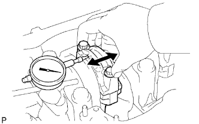
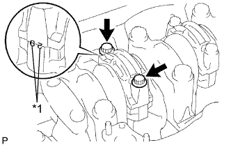
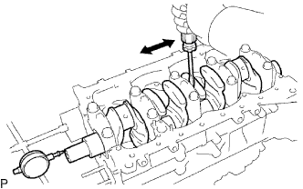

БЛОК ЦИЛИНДРОВ > РАЗБОРКА |
| 1. СНИМИТЕ МАСЛОВПУСКНОЕ ОТВЕРСТИЕ БЛОКА ЦИЛИНДРОВ |
| 2. ПРОВЕРЬТЕ ОСЕВОЙ ЗАЗОР ШАТУНА |
|  |
С помощью индикатора часового типа измерьте осевой зазор при движении шатуна назад и вперед.
| 3. ПРОВЕРЬТЕ МАСЛЯНЫЙ ЗАЗОР ШАТУНА |
|  |
Для обеспечения правильной сборки совместите сборочные метки на шатуне и крышке.
| *1 | Метка |
Выверните 2 болта крышки шатуна.
Используя 2 снятых болта шатуна, снимите крышку шатуна, покачивая ее назад и вперед.
Извлеките нижний подшипник из крышки шатуна.
Очистите шатунную шейку и подшипники.
Убедитесь в отсутствии на штифте и подшипниках коленчатого вала следов точечной коррозии и царапин.
Если штифт или подшипник коленчатого вала поврежден, замените подшипники. При необходимости отшлифуйте или замените коленчатый вал.
Оберните полоску сминаемого пластичного калибра Plastigage вокруг штифта коленчатого вала.
| *1 | Сминаемый пластичный калибр Plastigage |
Установите крышку шатуна (Нажмите здесь).
| *1 | Метка |
Выверните 2 болта, снимите крышку шатуна и нижний подшипник.
Измерьте ширину сминаемого пластичного калибра Plastigage в самой широкой точке.
| Параметр / Устройство | Заданные условия |
| Номинальное значение | 0,036 - 0,054 мм (0,00142 - 0,00212 дюйма) |
| U/S 0,25, U/S 0,50 | 0,037 - 0,077 мм (0,00146 - 0,00303 дюйма) |
| *1 | Сминаемый пластичный калибр Plastigage |
| Параметр / Устройство | Метка с номером | ||||||||||
| Крышка шатуна | 1 | 2 | 3 | ||||||||
| Коленчатый вал | 1 | 2 | 3 | 1 | 2 | 3 | 1 | 2 | 3 | ||
| Используйте подшипник | 2 | 3 | 4 | 3 | 4 | 5 | 4 | 5 | 6 | ||
| *1 | Метка 1, 2 или 3 |
| *2 | Метка 2, 3 или 4 |
| *3 | № 1 |
| *4 | № 2 |
| *5 | № 3 |
| *6 | № 4 |
| Параметр / Устройство | Заданные условия |
| Метка 1 | 62,014 - 62,020 мм (2,4415 - 2,4417 дюйма) |
| Метка 2 | 62,020 - 62,026 мм (2,4417 - 2,4420 дюйма) |
| Метка 3 | 62,026 - 62,032 мм (2,4420 - 2,4422 дюйма) |
| Параметр / Устройство | Заданные условия |
| Метка 1 | 58,994-59,000 мм (2,3226-2,3228 дюйма) |
| Метка 2 | 58,988-58,994 мм (2,3224-2,3226 дюйма) |
| Метка 3 | 58,982-58,988 мм (2,3221-2,3224 дюйма) |
| Параметр / Устройство | Заданные условия |
| Метка 2 | 1,486–1,489 мм (0,0585–0,0586 дюйма) |
| Метка 3 | 1,489-1,492 мм (0,0586-0,0587 дюйма) |
| Метка 4 | 1,492-1,495 мм (0,0587-0,0589 дюйма) |
| Метка 5 | 1,495-1,498 мм (0,0589-0,0590 дюйма) |
| Метка 6 | 1,498–1,501 мм (0,0590–0,0591 дюйма) |
Полностью удалите сминаемый пластичный калибр (Plastigage).
| 4. СНИМИТЕ ПОРШЕНЬ И ШАТУН |
 |
С помощью развертки для снятия уступа полностью удалите нагар с верхней части цилиндра.
| *1 | Инструмент для снятия уступа |
Выдавите поршень, шатун в сборе и верхний подшипник через верхнюю часть блока цилиндров, чтобы снять их.
Снимите верхний подшипник с шатуна.
| 5. СНИМИТЕ НАБОР ПОДШИПНИКОВ ШАТУНА |
Снимите подшипники шатунов с шатунов и крышек шатунов.
| 6. СНИМИТЕ НАБОР ПОРШНЕВЫХ КОЛЕЦ |
С помощью съемника поршневых колец снимите 2 поршневых кольца.
Снимите пружину и маслосъемное кольцо вручную.
| 7. СНИМИТЕ ПОРШЕНЬ С ПАЛЬЦЕМ В СБОРЕ |
 |
С помощью небольшой отвертки подденьте 2 пружинных стопорных кольца и снимите их с поршня.
Медленно нагрейте поршень до температуры примерно 80°C (176°F).
С помощью молотка с пластмассовой поверхностью и латунного стержня осторожно выбейте поршневой палец. Затем снимите шатун.
| 8. ПРОВЕРЬТЕ ОСЕВОЙ ЗАЗОР КОЛЕНЧАТОГО ВАЛА |
|  |
С помощью индикатора часового типа измерьте осевой зазор, двигая коленчатый вал вперед и назад с помощью отвертки.
| Параметр / Устройство | Заданные условия |
| Номинальное значение | 2,430 - 2,480 мм (0,0957 - 0,0976 дюйма) |
| Ремонтный 0,125 | 2,555 - 2,605 мм (0,1005 - 0,1025 дюйма) |
| O/S 0,250 | 2,680 - 2,730 мм (0,1055 - 0,1074 дюйма) |
| 9. ПРОВЕРЬТЕ МАСЛЯНЫЙ ЗАЗОР КОЛЕНЧАТОГО ВАЛА |
В несколько приемов равномерно ослабьте и выверните 10 болтов крышек подшипников коленчатого вала в указанной на рисунке последовательности.
С помощью снятых болтов крышек подшипников коленчатого вала подденьте крышку назад и вперед и снимите крышки подшипников коленчатого вала, нижние подшипники коленчатого вала и нижние упорные шайбы (только для крышки подшипника коленчатого вала № 5).
Поднимите коленчатый вал.
Очистите все коренные шейки и подшипники коленчатого вала.
Проверьте, нет ли на шейках и подшипниках коленчатого вала царапин и следов точечной коррозии.
При наличии повреждений на шейке или подшипнике замените подшипники для этой шейки. При необходимости отшлифуйте или замените коленчатый вал.
Установите коленчатый вал в блок цилиндров.
На каждую шейку положите сминаемый пластичный калибр (Plastigage).
| *1 | Сминаемый пластичный калибр Plastigage |
Установите крышки подшипников коленчатого вала (Нажмите здесь).
Снимите крышки подшипников коленчатого вала.
Измерьте ширину сминаемого пластичного калибра Plastigage в самой широкой точке.
| Параметр | Заданные условия |
| Номинальное значение | 0,030 - 0,048 мм (0,00118 - 0,00189 дюйма) |
| O/S 0,25, O/S 0,50 | 0,037 - 0,077 мм (0,00146 - 0,00303 дюйма) |
| *1 | Сминаемый пластичный калибр Plastigage |
| Параметр | Метка с номером | ||||||||||
| Блок цилиндров | 1 | 2 | 3 | ||||||||
| Коленчатый вал | 1 | 2 | 3 | 1 | 2 | 3 | 1 | 2 | 3 | ||
| Используйте подшипник | 2 | 3 | 4 | 3 | 4 | 5 | 4 | 5 | 6 | ||
| *1 | Передняя сторона |
| *2 | Метка 2, 3, 4, 5 или 6 |
| *3 | № 1 |
| *4 | № 2 |
| *5 | № 3 |
| *6 | № 4 |
| *7 | № 5 |
| Параметр | Заданные условия |
| Метка 1 | 75,000 - 75,006 мм (2,9528 - 2,9530 дюйма) |
| Метка 2 | 75,006 - 75,012 мм (2,9530 - 2,9532 дюйма) |
| Метка 3 | 75,012 - 75 018 мм (2,9532-2,9535 дюйма) |
| Параметр | Заданные условия |
| Метка 1 | 69,994 - 70,000 мм (2,7557 - 2,7559 дюйма) |
| Метка 2 | 69,988 - 69,994 мм (2,7554 - 2,7557 дюйма) |
| Метка 3 | 69,982 - 69,988 мм (2,7552 - 2,7554 дюйма) |
| Параметр | Заданные условия |
| Метка 2 | 2,482-2,485 мм (0,0977-0,0978 дюйма) |
| Метка 3 | 2,485-2,488 мм (0,0978-0,0980 дюйма) |
| Метка 4 | 2,488-2,491 мм (0,0980-0,0981 дюйма) |
| Метка 5 | 2,491-2,494 мм (0,0981-0,0982 дюйма) |
| Метка 6 | 2,494 - 2,497 мм (0,0982 - 0,0983 дюйма) |
Полностью удалите сминаемый пластичный калибр (Plastigage).
| 10. СНИМИТЕ КОЛЕНЧАТЫЙ ВАЛ |
Поднимите коленчатый вал.
Снимите верхние подшипники и верхние упорные шайбы (только для подшипника коленчатого вала № 5) с блока цилиндров.
| 11. СНИМИТЕ МАСЛЯНУЮ ФОРСУНКУ № 1 |
Снимите 4 обратных клапана и 4 штуцера подачи масла.
| 12. СНИМИТЕ РЕЗЬБОВУЮ ШПИЛЬКУ |
Выверните резьбовые шпильки.